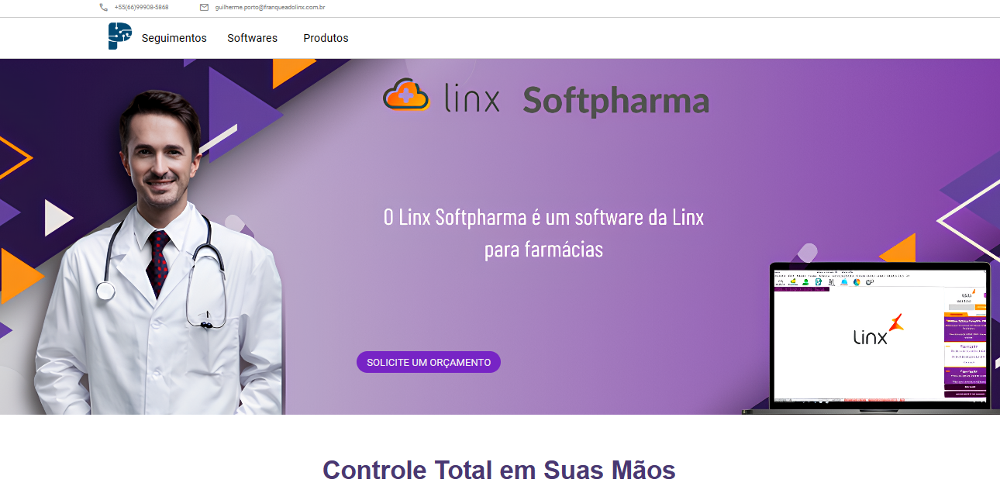
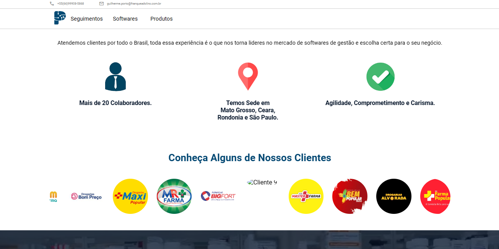

Carreira Profissional
Comecei meu primeiro trabalho aos 15 anos na área de TI na empresa CIM Tecnologia,
sem carteira registrada. Lá, adquiri várias experiências, como formatação de
computadores e notebooks, limpeza de equipamentos, instalação de câmeras e
servidores Windows 2019, incluindo o trabalho com área de trabalho remota e
experiências no controle de rede do servidor. Trabalhei por dois anos meio
período, ocasionalmente fazendo horas extras, e desenvolvi um grande interesse
em programação web durante esse período.
Atualmente, estou na Portotech, uma franquia da Linx, onde trabalho com o Sistema
Microvix como implantador. Minha função envolve todo o processo de configuração do
sistema e fornecimento de treinamento para os clientes. No início, foi desafiador
aprender o sistema, mas agora sinto que tenho um bom domínio sobre ele. Quando não
estou envolvido em implantações, também presto suporte para o sistema. Essa
experiência me proporcionou não apenas conhecimento técnico, mas também melhorou
meu domínio do português e me deu insights sobre o funcionamento interno de empresas,
especialmente aquelas no ramo de shopping. Além disso, obtive certificados e conheci
o funcionamento de d iversos softwares.
Passa Tempo
Eu tenho grande interesse e habilidade na programação, principalmente em HTML, PHP,
CSS e um pouco de JavaScript. Já desenvolvi vários projetos utilizando essas linguagens
e, recentemente, comecei a explorar um pouco de Python e Node.
Projetos
Site Portotech
Site Portotech, uma plataforma desenvolvida para a empresa Portotech Sistemas e
Consultoria. O site foi criado integralmente pela equipe de desenvolvimento, composta
por João Victor Poloniato Buss e Weverton Pereira Andrade, sendo responsáveis pela sua
concepção, implementação e estilização. Além disso, contamos com a colaboração de Kauã
Gabriel, que contribuiu com o design das imagens. Todos os direitos de imagens estão
associados à Portotech e seus colaboradores.
O site foi construído utilizando as seguintes tecnologias:
• HTML
• CSS
• JavaScript
A estrutura do projeto segue uma organização intuitiva, com os arquivos distribuídos
de forma a facilitar a manutenção e a adição de novos recursos. Os desenvolvedores
estão comprometidos em manter o código limpo e bem documentado.

